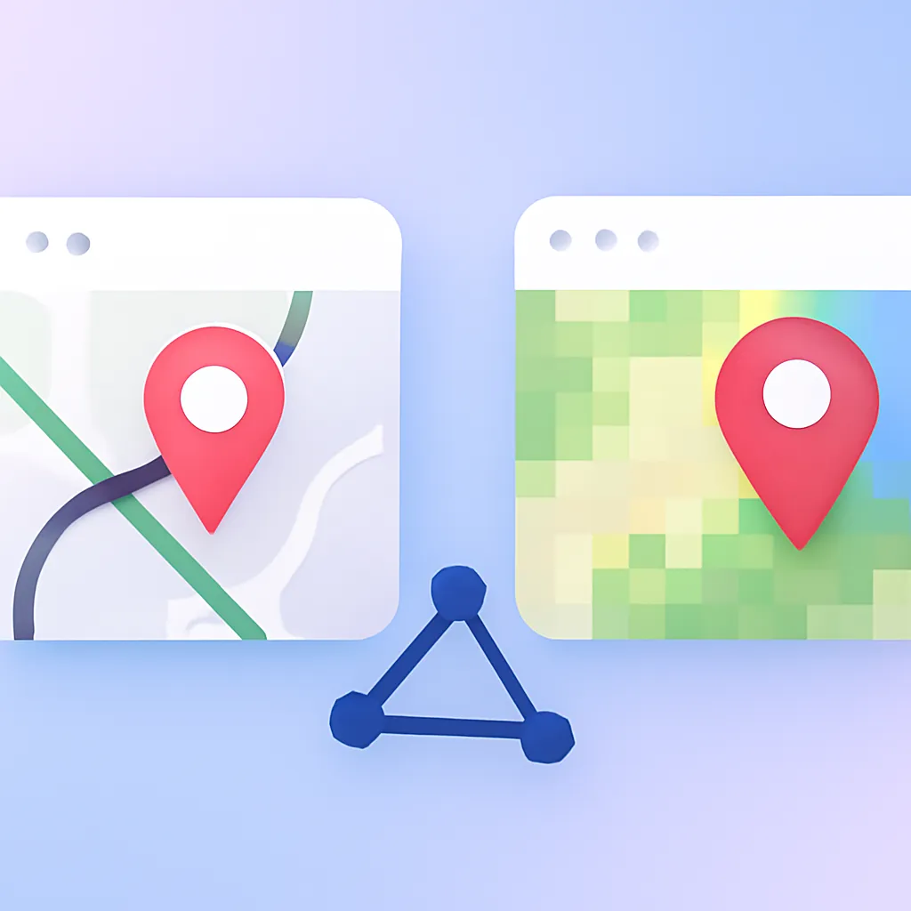

GIS벡터와 래스터, 공간 데이터의 두 가지 형태
벡터와 래스터는 공간 데이터를 저장하는 두 가지 방법으로 각기 다른 장단점을 지니고 있다.

GIS벡터와 래스터는 공간 데이터를 저장하는 두 가지 방법으로 각기 다른 장단점을 지니고 있다.
랜섬웨어 대비와 안전한 데이터 보호를 위한 백업 전략의 중요성을 알아봅니다. 조직 전체가 함께 대응해야 합니다.
간결하고 명쾌한 대시보드는 혼란을 줄이고 신속한 의사결정을 돕습니다. 필수 정보를 효과적으로 전하는 방법을 살펴봅니다.
 보안
보안
개인정보보호를 위한 실무 체크리스트를 통해 데이터 수집과 저장, 접근 권한 관리, 외부 위협 방어 방법을 알아보세요.
 데이터분석
데이터분석
데이터 시각화를 위한 차트 선택 가이드를 제시합니다. 막대, 선, 파이 차트 등의 사용법과 주의점을 알아보세요.
 데이터분석
데이터분석
엑셀로 손쉽게 데이터 분석을 시작하세요. 기초 정리부터 피벗 테이블, 함수 활용까지 알아보세요.
 인공지능
인공지능
공공기관이 AI를 도입할 때 반드시 고려해야 할 문제 정의, 데이터 품질, 도구 선택, 그리고 비용 요소를 탐구합니다.
 데이터분석
데이터분석
공공데이터를 활용해 실무에 유용한 분석을 할 수 있는 방법과 데이터 수집 과정에 대해 알아보세요.
 인공지능
인공지능
ChatGPT로 업무에 혁신을 가져올 10가지 프롬프트 활용법을 소개합니다. 효율적인 데이터 처리와 보고서 작성 방법을 알아보세요.
표로 보면 숫자였던 것이 지도 위에 올리면 다르게 보인다. 주소를 좌표로 바꾸는 일, 좌표계라는 복병, 거리·겹침 연산이 만드는 답 — 공간정보를 행정에서 다루며 배운 것.
 GIS
GIS
GIS는 공간적 데이터 분석과 시각화를 통해 복잡한 문제 해결을 지원하는 필수 도구입니다.
도구 이야기로 빠지기 쉽지만, 일이 막히는 건 그 앞이었다. 데이터를 펴는 일, 엑셀로 충분한 경계, 그래프보다 질문이 먼저라는 것 — 분석을 시작하기 전에 챙긴 것들.